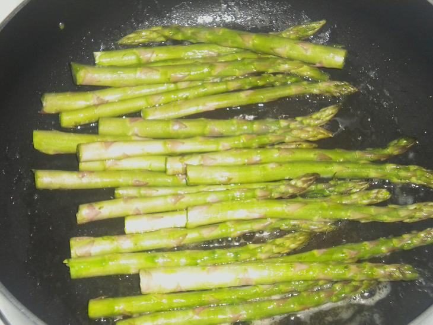

Step 2: Now get a pan on the stove, crank the heat to medium high. Throw some butter in the pan; once it's melted add your asparagus. Roll it around in the pan so it all gets coated with some butter & then grab your olive oil & just drizzle back & forth over the asparagus a few passes. Sprinkle on some salt & pepper.
